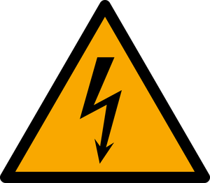

Hazard Awareness – Electrical
Electrical hazards in CEDT and Eng Phys facilities are primarily associated with shock and fire risk from lab equipment, power supplies, and custom-built apparatus. McMaster's Electrical Safety Program is set out in RMM 316.
Provincially, electrical equipment and systems must conform to Ontario Regulation 164/99, which adopts the Canadian Standards Association's Electrical Safety Code (CSA C22.1), subject to amendments issued by the Electrical Safety Authority (ESA). The ESA administers the Code in Ontario and can be contacted to arrange inspections of electrical equipment for approval. All electrical products must carry approved safety markings, most commonly the CSA mark, confirming they meet the Code.

Electrical Shock HazardsThe severity of an electrical shock depends on the amount of current that flows through the body, which can heat and burn tissue and disrupt normal nervous system and cardiac function, potentially causing fatal heart fibrillation. The resulting current depends on both the voltage involved and the electrical resistance of the path through the body.
- Currents as low as roughly 8 mA can cause involuntary muscle contraction, making it difficult to pull away from the source. This applies to both AC and DC shocks.
- Sustained currents in the range of 100–300 mA can be sufficient to cause death.
Electrical Fire Hazards
As with shock, electrical fire risk stems from heat generated as current flows through a conductor. Wiring and circuit components must be rated to handle currents well above the threshold that trips breakers or melts fuses; using underrated, frayed, or damaged wiring significantly increases fire risk.
Core Safe Practices
- All electrical equipment must be properly grounded and CSA-approved (or approved by an equivalent recognized standards body).
- Never remove the ground pin from a three-prong plug.
- Only qualified, authorized personnel should install, modify, test, or repair electrical equipment or distribution systems (per RMM 316).
- Frayed or damaged wires/cords must not be used; replace them before further use.
- Minimize reliance on extension cords for permanent setups; request additional outlets through Facility Services instead.
- Equipment immersed in or used near liquids must be protected by a ground fault interrupter.
Related Resources
Sources: McMaster University Risk Management Manual RMM 316 (Electrical Safety Program); Ontario Regulation 164/99; CSA C22.1 Canadian Electrical Code; Electrical Safety Authority (Ontario).